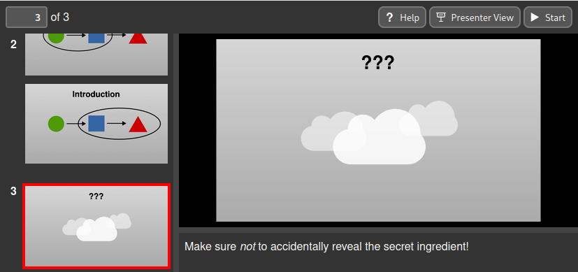

Speaker notes¶
Speaker notes can be added to a slide by creating a text box whose first line
contains ### (three hashes). The remainder of the textbox contains the
speaker notes in markdown format. Any special SVG text formatting will be
ignored.

When rendered, the textbox containing the speaker notes will be made invisible and so its physical location within the page is unimportant. At the time of writing, only the XHTML output format supports displaying speaker notes. In other formats, the speaker notes are simply removed.
Tip
If you want to create a text box in your slide whose first line is ###
without it being interpreted as a speaker note, add a trailing space to the
first line. It will not be visible in the resulting document but will
prevent Slidie treating it as a speaker note.
Per-build step speaker notes¶
If multiple text boxes containing speaker notes are addded to your document, the notes are concatenated together in the order they appear in the SVG document. This means that the top-most notes on the top-most layers will be shown first.
Speaker note text boxes placed on layers with build steps are treated as only being applicable whilst that layer is visible. In the XHTML output format, these notes will be dimmed out (but still visible) when the layer is hidden.